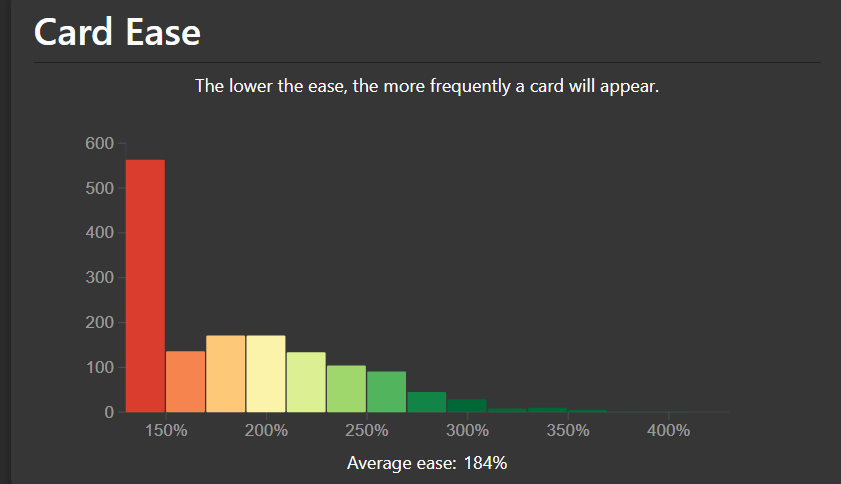

Issues with Anki SM-2
The issues with the default Anki SuperMemo 2 (SM-2) algorithm are
- Ease Hell
- Short intervals for new cards
- Long intervals for mature cards
Ease Hell
At a high level, when calculating the next interval for a review card, Anki SM-2 performs the calculation:
\[ \text{NewInterval} = \text{OldInterval} \times \text{EaseFactor} \times \text{IntervalModifier} \]
And pressing the buttons
- Again: decreases the ease factor by 20%.
- Hard: decreases the ease factor by 15%.
- Good: does not affect the ease factor.
- Easy: increases the ease factor by 15%.
The only way to increase the ease factor for a card is to press the Easy button.
Ease Hell is when a card's ease factor keeps decreasing by pressing the Again or Hard buttons, and inevitably gets capped at 130%. This means that the card will be reviewed unnecessarily very often since the interval grows very slowly.
Using the Easy button more often can fix this issue, but deciding whether to press the Easy button to increase the ease factor or not introduces extra mental fatigue while reviewing. Additionally, the ease factor of a card is not shown during reviews. Moreover, some users only use the Again and Good buttons (ie, Pass/Fail) to reduce mental fatigue. In this case, the ease factor of a card will never increase.
The Anki add-on Straight Reward addresses this issue by rewarding consecutive successful reviews with an ease factor bonus.
Anki SRS Kai natively implements the Straight Reward algorithm to address this issue and has been renamed to Ease Reward.
You can determine if your deck is stuck in Ease Hell by navigating to the Statistics screen and navigating to the Card Ease graph. The image below is an example of a deck stuck in Ease Hell where a large portion of the cards are stuck at the minimum ease of 130%.

Short intervals for new cards
The default Graduating Interval in Anki is set to 1, which means a card will always be seen the next day after the learning card becomes a review card.
According to SuperMemo,
The first optimum interval for review at retrievability of 90% is 3.96 days.
Additionally, FSRS benchmarked the accuracy of several SRS algorithms on a dataset of roughly 10,000 users. FSRS-6 has a very high accuracy rate and was trained on a dataset of approximately 10,000 Anki users, which resulted in the default parameters:
\[ w = [0.212, 1.2931, 2.3065, 8.2956, \cdots] \]
The optimal first interval for review at retrievability of 90% when pressing Good for a new card for the first rating is 2.3065 days. Visit the FSRS algorithm for more details.
By setting the Graduating Interval to 1, the user is reviewing at a nonoptimal time if the target retention is 90%
Long intervals for mature cards
According to SuperMemo,
Memory stabilization (abbreviated \(SInc\) for stability increase) is the increase in memory stability as a result of the retrieval of a memory (e.g. in review). Stabilization may also be a result of memory optimization in sleep.
The higher the stability, the lesser the stability increase at review.
Additionally, according to FSRS,
The larger the value of S, the smaller the SInc value. This means that the higher the stability of the memory, the harder it becomes to make the memory even more stable.
Anki SM-2 does not make the increase in interval smaller as the current interval gets larger. This means that the card is more likely to be forgotten by the time it is reviewed.
For example, suppose a card has
\[ \begin{align} \text{OldInterval} &= 1000 \\ \text{EaseFactor} &= 2.5 \\ \text{IntervalModifier} &= 1.0 \\ \end{align} \]
then
\[ \begin{align} \text{NewInterval} &= \text{OldInterval} \times \text{EaseFactor} \times \text{IntervalModifier} \\ &= 1000 \times 2.5 \times 1.0 \\ &= 2500 \end{align} \]
The interval for the card increased from 1000 days (or roughly 2.74 years) to 2500 days (or roughly 6.85 years). It is very likely that this increase in interval is too large for most material and will be forgotten by the time it is reviewed.